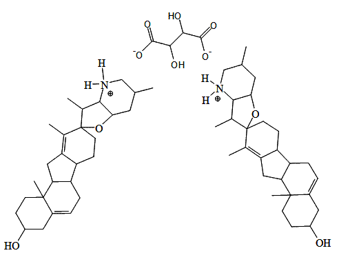

Pricing
Please Contact Customer Service to arrange for orders of more than 1 gram.| Cyclopamine Tartrate Salt - 25 mg | $300.00 |
|---|---|
| Cyclopamine Tartrate Salt - 50 mg | $550.00 |
| Cyclopamine Tartrate Salt - 100 mg | $800.00 |
| Cyclopamine Tartrate Salt - 0.5 g | $3,000.00 |
| Cyclopamine Tartrate Salt - 1.0 g | $5,000.00 |
Physical Characteristics
- Purity: Greater than 99%
- Molecular Weight: 972
- Molecular Formula: C58H88N2O10
Note: All products are intended for research use only, Customer assumes all responsibility for misuse or mishandling of products.
Cyclopamine Tartrate Salt
Cyclopamine Tartrate Salt (Hydroxy Carboxylic Acid) is a white crystaline compound that has been filed for a provisional patent by LNP on 2/10/2008.
Click to see US Patent data for Cyclopamine Tartrate Salt.
Summary
- Less toxic water-soluble analog of Cyclopamine.
- Contains potent HedgeHog (HH) signaling inhibitors.
- Particularly useful in treating cancers associated with HH signaling.
- Compound and uses thereof disclosed through US Patent, which provide compositions and methods for modulating smoothened-dependent pathway activation.4,5.

Cyclopamine Tartrate Salt
Solubility and Stability
2 mg of Cyclopamine Tartrate Salt is soluble by stirring in 1 ml of deionized water (at room temperature). The solubility will increase to about 5 mg Cyclopamine Tartrate per 1 ml of deionized water when 1.5 mg tartaric acid is added to the solution at room temperature (increasing the temperature will increase the solubility). In each case the solution must be well stirred. LC-MS Analyses indicate that the aqueous solution of Cyclopamine Tartrate is stable for at least one week at room temperature. Pharmasolve ( N-Methyl -2-Pyrrolidone ), cGMP grade will increase its solubility to 1.0 % by weight in deionized water. This solution is stable for at least one week.
Related Publications
1. Alam MM, Sohoni S, Kalainaykan SP, Garrossian M, Zhang L. Cyclopamine tartrate, an inhibitor of Hedgehog signaling, strongly interferes with mitochondrial function and suppresses aerobic respiration in lung cancer cells.. BMC Cancer. 2016 Feb 24;16(1):150. doi: 10.1186/s12885-016-2200-x. PMID: 26911235. http://www.ncbi.nlm.nih.gov/pubmed/26911235 (accessed Feb 28, 2016).
2. Fan Q, Gu D, He M, Liu H, Sheng T, Xie G, Li CX, Zhang X, Wainwright B, Garrossian A, Garrossian M, Gardner D, Xie J. "Tumor shrinkage by cyclopamine tartrate through inhibiting hedgehog signaling." Chin J Cancer. 2011 Jul;30(7):472-81.
3. Kalainayakan S, Ghosh P, Dey S, Fitzgerald K, Sohoni S, Konduri P, Garrossian M, Liu L, Zhang L Cyclopamine tartrate, a modulator of hedgehog signaling and mitochondrial respiration, effectively arrests lung tumor growth and progression. Scientific Reports 9, Article number: 1405 (2019).
4. Lee Stephen T., Welch Kevin D., Panter Kip E., Gardner Dale R, Garrossian Massoud, Chang Cheng-Wei Tom. Cyclopamine: From Cyclops Lambs to Cancer Treatment. American Chemical Society [Online] 2014, 10, 1021 http://pubs.acs.org/doi/abs/10.1021/jf5005622 (accessed Feb 28, 2016).
5. Poorva Ghosh, Yihang Guo, Adnin Ashrafi, Jingyu Chen, S. Oxygen-enhanced optoacoustic tomography reveals the effectiveness of targeting heme and oxidative phosphorylation at normalizing tumor vascular oxygenation. Research Gate [Online] https://www.researchgate.net/publication/330879231_Cyclopamine_tartrate_a_modulator_of_hedgehog_signaling_and_mitochondrial_respiration_effectively_arrests_lung_tumor_growth_and_progression (accessed Apr 28, 2020).
6. Xie, Jingwu.; Garrossian, Massoud. (The Board of Regents of the University of Texas System). Cyclopamine tartrate salt and uses thereof. US Patent 8,658,664, February 25, 2014.
7. Xie, Jingwu.; Garrossian, Massoud. Cyclopamine tartrate salt and uses thereof. US Patent Application 20110092530, Filed: August 9, 2010. Issued: April 21, 2011.